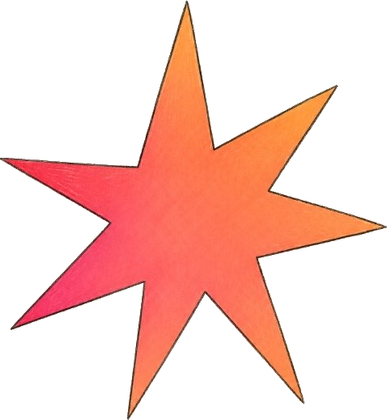

Создать независимое пространство, где человек чувствует себя свободным и значимым — и обретает право быть собой.
Собрать медиа, которому доверяют как исследованию и читают как вдохновляющий, интеллектуальный и эстетичный журнал.
Понимание индустрии через живой опыт без шаблонных историй успеха. Мы берем интервью у тех, кто "варится" в индустриях ежедневно.
Во что мы верим
{{ v.t }}
{{ v.d }}
Аревик Емишян
Студентка профиля «Ивент-дизайн и экономика впечатлений» Института развития креативных индустрий НИУ ВШЭ. «Вспышка» исследует профессию через интервью с теми, кто создаёт культурную, интеллектуальную и коммерческую ценность.

Читать медленно
{{ cur.title }}
{{ cur.excerpt }}
{{ p }}
{{ cur.pull }}
Голоса индустрии
Разговоры с теми, кто создаёт креативные индустрии. Читатель видит вокруг себя равных.

Скоро здесь появятся новые интервью.{{ cur.title }}
{{ p }}
{{ q }}
{{ x.q }}
{{ x.note }}
{{ x.a }}